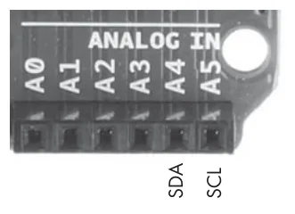

The I2C bus, also known as the Two Wire Interface (TWI) bus, is a simple and easy device used for data communication. Data is transferred between devices and the Arduino through two wires, known as SDA and SCL (the data line and clock line, respectively). In the case of the Arduino Uno, the SDA pin is A4 and the SCL pin is A5, as shown in Figure 17-1. Some newer R3 boards also have dedicated I2C pins at the upper-left corner for convenient access.

On the I2C bus, the Arduino is considered the master device, and each IC out on the bus is a slave. Each slave has its own address, a hexadecimal number that allows the Arduino to address and communicate with each device. Each device usually has a range of I2C bus addresses to choose from, which is detailed in the manufacturer’s data sheet. The particular addresses available are determined by wiring the IC pins a certain way.
To use the I2C bus, you’ll need to use the Wire library (included with the Arduino IDE):
#include <Wire.h>Next, in void setup(), activate the bus with this:
Wire.begin();Data is transmitted along the bus 1 byte at a time. To send a byte of data from the Arduino to a device on the bus, three functions are required:
- The first function initiates communication with the following line of code (where
addressis the slave’s bus address in hexadecimal—for example0x50):
Wire.beginTransmission( address );- The second function sends 1 byte of data from the Arduino to the device addressed by the previous function (where
datais a variable containing 1 byte of data; you can send more than 1 byte, but you’ll need to use oneWire.write()for each byte):
Wire.write(data);- Finally, once you have finished sending data to a particular device, use this to end the transmission:
Wire.endTransmission();To request that data from an I2C device be sent to the Arduino, start with Wire.beginTransmission(address), followed by the following (where x is the number of bytes of data to request):
Wire.requestFrom( address , x );Next, use the following function to store the incoming byte into a variable:
incoming = Wire.read(); // incoming is the variable receiving the byte of dataNow finalize the transaction with Wire.endTransmission(), and we’ll put these functions to use in the next project.